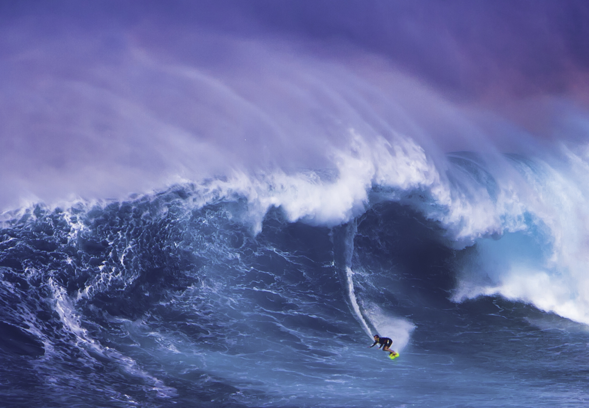

Graphics
What kind of photos are good to encode using JPEG?
Real life pictures, they can be compressed into small files.
What kind of photos are good to encode using GIF?
Cartoon and animated photos
What is unique about the PNG format?
It supports transparency for logos and still have the quality of the picture if we dont want the background.
How do you resize your photo to the size it should be displayed?
It can be done in css in stylesheet by using img link and adding a class tag and adjust the height and width.
Why should you resize photos using photo editing software instead of resizing it using CSS?
It makes the page load more slowly when resizing in CSS so it is recommended to do it using photo editing software.